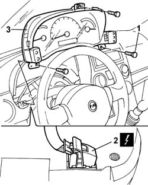

5560B10 analogue control panel - r+r
- Path
- Procedures > 55 ELECTRICAL EQUIPMENT > 5560 INSTRUMENT PANEL > 5560B analogue control panel > 5560B10 analogue control panel - r+r
- Kind
- repair procedure (removal / refitting; the operation number is the code)
- Applies to
- all engines; all production periods
- Interactive page
- https://sloeber94.github.io/elrnDB-fPnd/en/#/2752995
Applies to: all engines; all production periods
 Removing
Removing
 Refitting
RefittingDisconnect the battery negative terminal.
7040A23 frame of instrument panel on facia - r r
1. Undo the retaining bolts.
Partially remove the instrument panel.
2. Disconnect the electrical connection.
 | Name | Connector |
|---|---|---|
2 | Instrument panel | E50 |
3. Remove the instrument panel.

Applies to: all engines; all production periods
Refitting
RemovingConnect the electrical connection.
| Name | Connector |
|---|---|---|
- | Instrument panel | E50 |
Position the instrument panel in its seating.
Tighten the fixing bolts.
7040A23 frame of instrument panel on facia - r r
Connect the battery negative terminal.
Topics linked from this page (1)
Topics that link to this page (22)
- K81 AIRBAG WARNING LIGHT OFF / (DO NOT CARRY OUT INITIAL TEST)
- Z81 COMMUNICATION WITH FAILURE WARNING LIGHTS ERROR
- 5010D17 mixed air upper sensor - r r
- 5020A10 heater box - r+r
- 5020A30 heater fan motor - r+r
- 5020A44 heater fan motor resistor - r+r
- 5020A50 heater radiator - r+r
- 5040B64 sensor on evaporator for a/c ecu - r + r
- 5040C10 air conditioner box - r+r
- 5040C26 evaporator unit condensate collection tank - r r
- 5040C30 fan motor - r+r
- 5040C50 air conditioner heater radiator - r+r
- 5040C64 a/c evaporator - r+r
- 5040D14 ecu with automatic air conditioner pushbuttons - r+r
- 5040D75 Air conditioning recirculation flap control MOTOR - R.R.
- 5505A90 rear wiring bundle - r r or replace
- 5505C26 bonnet wiring - r r
- 5505C34 intergrated instrument under facia front air bag wiring - r r
- 7005A24 front side door r r
- 7040A10 instrument facia trim - r+r
- 7040A97 facia trim support beam - r r
- 7040L10 cabin floor carpet - r r